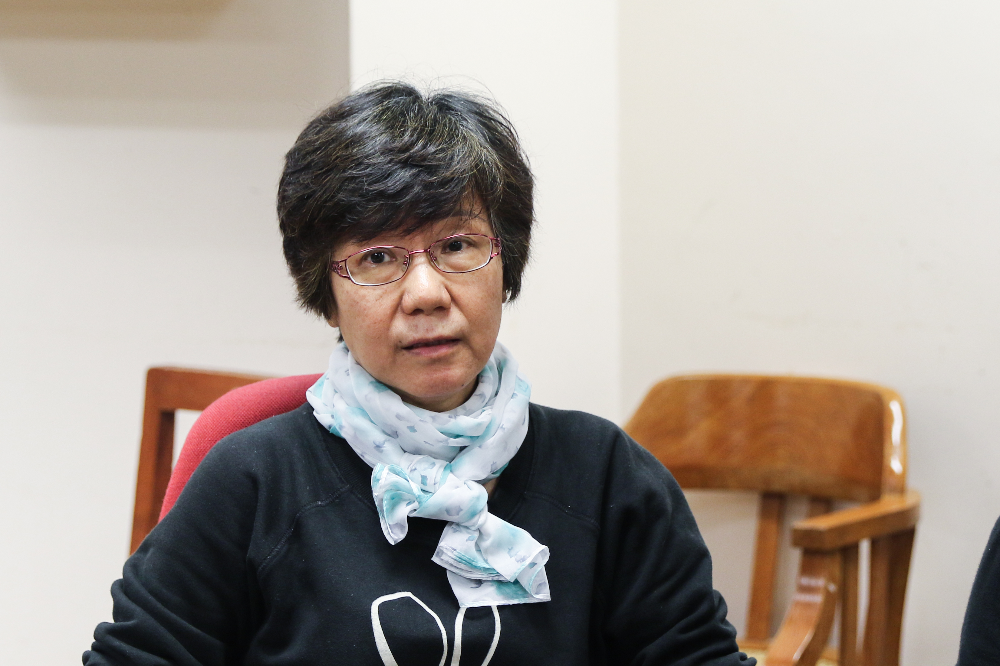

Certificate regulation covers delays in private care home improvements
Certificate regulation helps puts off required constructions in nursery homes for years and now the homes eventually start to rush for the deadline.
Care homes for the disabled in Hong Kong dragged their feet in improving facilities and fire safety by manipulating the renewal of an alternative licence, the Certificate of Exemption (the certificate).
The promise made by the government to put an end to the certificate by the end of 2019 did not halt such operations, only expedited the game.
For six of the private residential homes in Sham Shui Po or Tai Po district whose certificates had expired on March 31 and are due to meet licensing requirements, four of them simply put up a renewed Certificate of Exemption on April 1 right away and go on to linger, the reporters found.
One of the failed nursery homes, Home Of Good Shepherd Limited in Cheung Sha Wan, was expected to start its improvement a year ago but the construction is not going to happen until this May, the director Mr.Lau told the reporters.
The certificate is only granted to homes opened before November 18 in 2011, the day when the Residential Care Homes (Persons with Disabilities) Ordinance, Cap. 613 went to effective, if they were not on a par with the licencing requirements stipulated in the ordinance.
That is to say, the disabled homes still holding a certificate today were given in total more than seven years to improve their conditions and such dilly-dally has been well covered by the system.
Although the ordinance rules that a certificate can only last for up to 36 months and most of the certificates held by private homes are valid for 12 months as reporters found in February, there is no restriction on how many times it can be renewed.
The government has the vision to make all certificate holders meet the licensing requirements by the end of 2019, said Vivian Siu, the senior information officer from Social Welfare Department in a written reply to the reporters.
However, 152 disabled homes in Hong Kong are still operating with the certificate by the end of March, leaving them nine months away from the deadline, according to Carol Ip, the Director of Social Welfare, who gave the figure on a panel on welfare service in legislative council on April 15.
These homes of disabled may renew their certificates for the last time, but then comes another concern: with a short timeframe to upgrade, the rush is anything but a good news for the current residents during the renovation.
Government liaison lengthens improvement plans
With just six months planned to finish the project which the home failed to complete in years, the person in charge of Home Of Good Shepherd Limited, Mr. Ma, sounds confident in meeting the deadline.
“If they (the Social Welfare Department) have approved the renovation plan, we will be granted the license as long as we follow the improvement steps,” said Mr. Ma.
Home Of Good Shepherd Limited is one of the private care homes who is holding a Certificate of Exemption, which was issued immediately after its previous one expired at the end of March, allowing him another seven months for the improvement after a twelve-month period.
When asked why the project was not up to scratch during the previous period, the man attributed the delay to the time-consuming administration works with the government.
“It’s not that simple (to meet the Social Welfare Department’s requirements in twelve months),” said Mr. Ma, who is responsible for the medium care level facility in Cheung Sha Wan.
“We had to go back and forth with the government with documents, look for contractors and go through the whole tender process. There were many procedures,” he said.
The previous year was spent on the liaison with government departments, including the Architectural Services Department, to ensure the design of their care home could be up to the standard, he said.
The improvement works to be carried out will involve changes in basic facilities, for instance, adjusting the dimension of passageways to make it wide enough for wheelchairs to pass through, he said.
Now the home is in full capacity and waiting for the commencement of construction by the end of May, according to Mr. Ma.
Hang Tau Fu Hong Care Home, a private care home in Sheung Shui, also made the same move by renewing its certificate this February after failing to meet the previous deadline, according to the records on Social Welfare Department.
Although the care home was granted 12 months to strive for a license, the director of the medium care level residential home, Mr. Lau, also justified the delay by saying the works besides construction cost plenty of time.
“The whole process involves many government departments, starting from the stage of application to receiving the financial aids,” Mr. Lau said.
The home is currently under construction on the facilities and fire security equipment but he refused to disclose more details.
He said the care home has concurrent construction projects going on as they took funds from Social Welfare Department and need to “be serious with their requirements”.
“(Affecting the residents) Is inevitable but it happens everywhere. If I open a restaurant, the construction will affect the operation too, right?” he said.
An unmoved business on disabled people
“It is a dilemma between ‘quality’ and ‘quantity’,” said Monica Chan Yuk-yee, the vice chairperson of Parents’ Network of Chosen Power, a non-government organisation for youth with intellectual disabilities.
The regulations will continue to be difficult to enforce on the private homes when the scarcity of care homes continue to gain the operators the upper hand, she said.
“A small private home accommodates twenty residents, and the big ones house 50 to 60 residents. Where could these people stay if the government shut a private home down?” Ms. Chan said.
She said the government made efforts by upping the standard for disabled care homes, but also raised doubt in the supports provided for the improvements.
The residents had to move between different floors, sleep in the living room, and even stay in a hall as the construction going on, which brings inconvenience and concerns in privacy issues, she said.
Some homes tried to apply for camp sites where the residents can stay for a long term, but the facilities were different from home, making it hard for the residents to adapt to the environment, she added.
“With a temporary site for everyone to stay, the whole construction can be done in a short term. But no such facilities were provided,” she said.
The Social Welfare Department said it “provides additional technical support for RCHDs (care homes) having difficulties in taking forward the rectification works”, wrote Vivian Siu, the senior information officer of the department.
It also provides subsidies to carry out improvement works and grants up to ninety percent of the recognised cost of the works, Ms. Siu wrote.
The plague of substandard living conditions in the private disabled care homes will not end with the termination of the certificate system by the end of this year, said Edith Au Yim-fong, the chairperson of Parents’ Network of Chosen Power.
She calls for a bigger picture - sufficient supports for the disabled in the community.
Adding more care homes to cater to the demands of parents should not be the only thing on the agenda of the government, said Ms. Au.
“If there are centers in our community which can provide help for them (the disabled) in emergency, many disabled people can live on their own. We don’t even need as much care homes,”
“Not everyone needs a care home, the demand is skyhigh because we don’t have another choice,” said the chairperson.